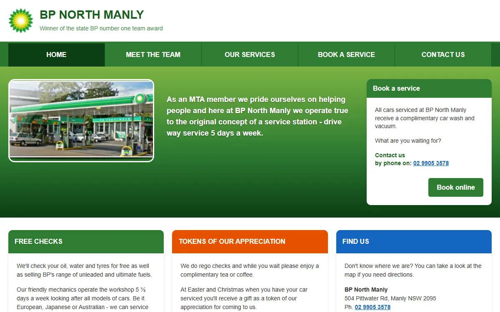
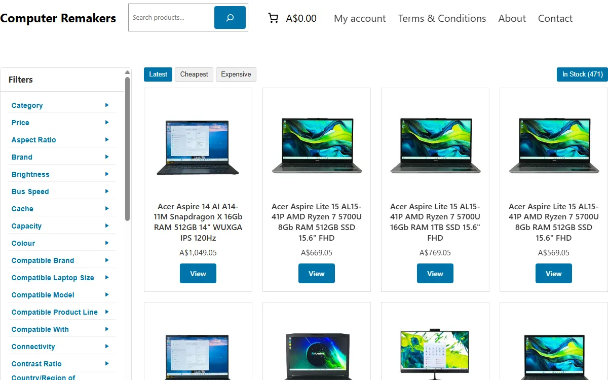
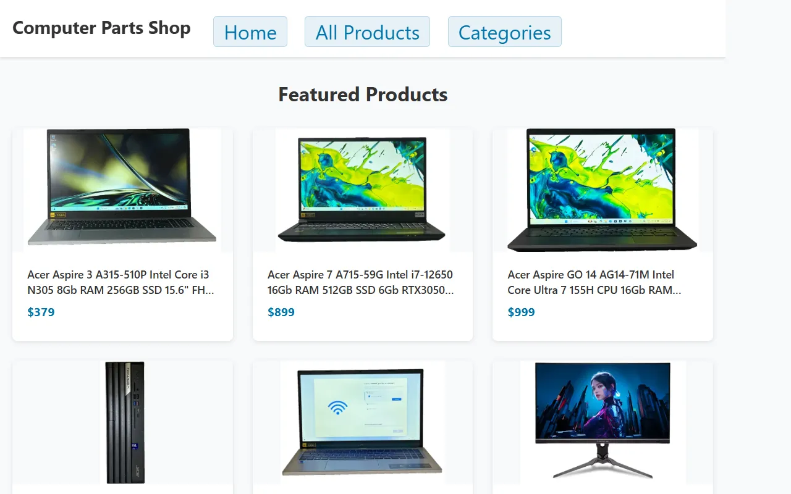
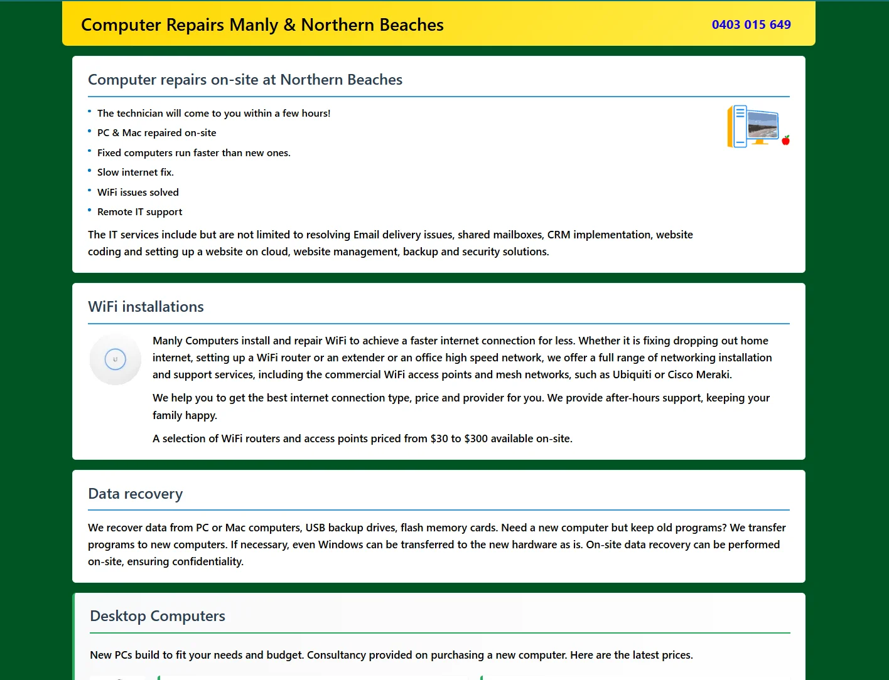
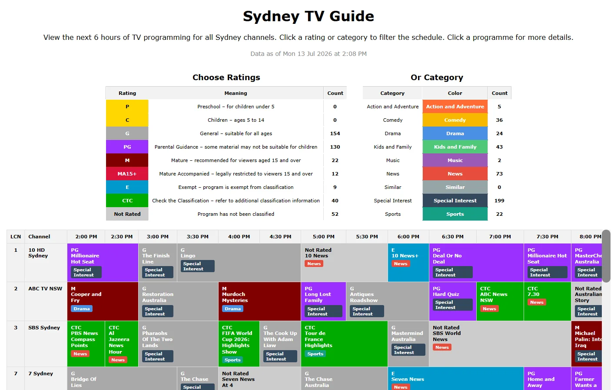

Web Development
Selected client and commerce sites, with screenshots stored locally in this repository and descriptions based on the live pages.
Anastasia Berezov
A personal athlete website on WordPress, designed around simplicity, affordability, and clear access to profile, achievements, news, gallery, and contact details.
Visit website
BP North Manly
A local auto mechanic and petrol station site with contact and booking paths, rebuilt from an older non-mobile layout into a modern responsive design while staying on a plain PHP stack without frameworks.
Visit website
Computer Remakers
An online computer shop built on WooCommerce with a custom lightweight theme, minimal presentation, and tailored filtering. Custom WordPress plugins support live product sync with the same business's eBay store.
Visit website
Computer Parts Shop
A plain HTML version of the Computer Remakers concept, intentionally kept simple for low-cost AWS hosting while still presenting categories, product listings, and a lightweight storefront feel.
Visit website
Manly Computers
An attempt at a simplified HTML-based service and products site on AWS, focused on lightweight presentation, clear service information, and accessible product listings.
Visit website
Sydney TV Guide
A work-in-progress TV guide for all Sydney channels, built on plain PHP without frameworks. It simplifies selection with intuitive category and ratings filters.
Visit websiteWordPress and dev tools
WordPress plugins and practical web development tools
Cleanup Orphan Images
WordPress plugin that deletes files from the uploads directory not registered in WordPress database. Keeps your media library clean.
View on GitHubAuto Product Meta Description
WooCommerce plugin that automatically generates SEO-friendly meta descriptions for product pages. Boost your store's search rankings.
View on GitHubProduct Excerpt
WordPress plugin that overrides WooCommerce product excerpt with eBay Condition Description via WP-Lister integration.
View on GitHubNo Emojis
Lightweight WordPress plugin that disables emoji scripts and styles. Improve page load speed by removing unnecessary resources.
View on GitHubDomain Tracker
PHP-based domain management tool. Fetches and saves domain information, DNS records, with custom properties to local JSON file.
View on GitHubManly WebP Converter
WordPress plugin that converts media library images to WebP format, reducing server storage and improving page load times. Available on WordPress.org.
View on GitHubManly Fix
WordPress plugin that applies configurable HTML5 fixes to WordPress and WooCommerce output, resolving W3C validator errors with individual toggles per fix.
View on GitHubView All Projects
Explore all open source projects, including PowerShell scripts, Java lessons, and more on our GitHub profile.
Visit GitHub